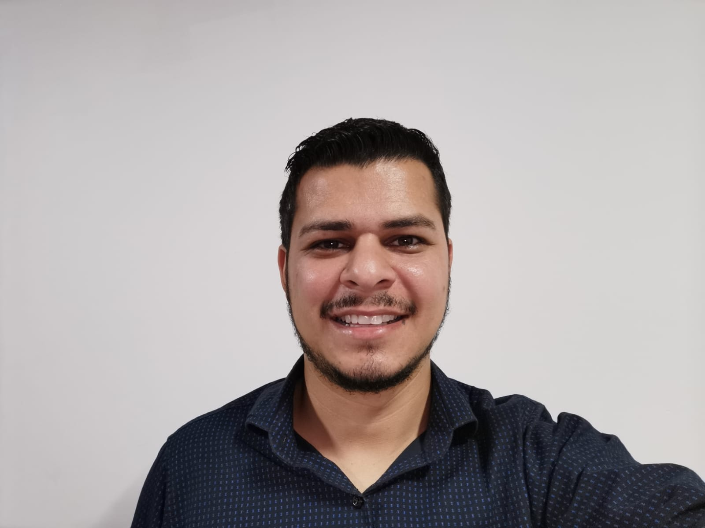

Analista de Testes Sênior | QA de Sistemas Embarcados e Automação Industrial
Analista de Testes Sênior com quase 10 anos em Pesquisa, Desenvolvimento e Inovação (PDI), garantindo a qualidade de soluções que unem software, eletrônica e mecânica.
Sou especialista em sistemas de visão e laser para leitura de códigos de barras e dimensionamento volumétrico, com foco em equipamentos SICK: dimensionadores VMS, leitores laser CLV, leitores por câmera da linha Lector, câmeras 3D Visionary e câmeras sensingCam SEC100/SEC200, além de leitores Hikrobot. Também atuo com balanças dinâmicas e estáticas como Técnico autorizado em instrumentos de pesagem pelo INMETRO, e no desenvolvimento e teste de placas eletrônicas.
Minha base é técnica e prática: formação em Eletrônica (Cedup – 2015/2016), nove anos como Mecânico de Manutenção na Fabitex (2008–2017) e, atualmente, Engenharia de Software na Uniasselvi (2024/atual), onde programo em Python e C#.
Essa combinação me permite enxergar o produto por inteiro, do firmware ao chão de fábrica, e encontrar falhas onde software e hardware se encontram.
Fevereiro 2017 - Presente · Indaial, SC
Janeiro 2023 - Presente
Janeiro 2020 - Dezembro 2022
Fevereiro 2017 - Dezembro 2019
Fabitex
Janeiro 2008 - Janeiro 2017
Uniasselvi
2024 - 2027
CEDUP Timbó
2015 - 2016
SENAI Timbó
2014
E.E.B. Osvaldo Cruz
2001 - 2007
INMETRO
Udemy
2024
Hikrobot
2024
SICK
2024
Udemy
2023 - 2024
Mitsubishi
2023
Mitsubishi
2023
Weightech
2023
Weightech
2023
Mitsubishi
2022 - 2023
Weightech
2022
Mitsubishi
2021 - 2022
CCAA
2019 - 2023
ProWay IT Training
2017